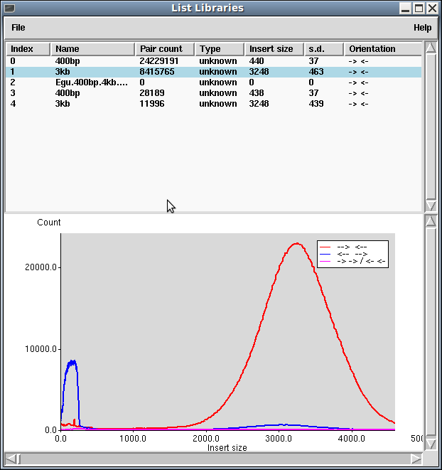

The List Libraries window is perhaps misnamed as it handles arbitrary
groups of reads, possibly due to the use of multiple libraries,
multiple instrument types or simply multiple lanes on a single
instrument. For SAM/BAM files this informations comes from the
@RG header lines. For other formats Gap5 typically makes use of
the input filename to group data together.

The basic plot shows a list of library names and how frequently read pairs have been identified as matching to the same contig. This is computed at the time of import via tg_index and so will not be updated on contig joining or breakage. The Type field indicates the instrument platform type (for example Illumina or 454), although this is often absent from the input BAM files.
The Insert size and standard deviation (s.d.) are derived from
the sequence alignments, with assumptions of an approximately Gaussian
distribution. While not entirely accurate this is typically sufficient
for most libraries when viewed in a summary table. Finally the
Orientation field indicates the relative orientation in which most
of the read-pairs have been assembled. This will be one of
"-> <-", "<- ->" or "-> -> / <- <-" to
indicate the relative orientations of the read-pair. Whether the observed
orientation is correct will depend on the particular sequencing
strategy used.
Underneath the list is a histogram of observed insert sizes for the currently selected library. The graph is currently very rudimentary with no controls, but it will auto-scale to fit the data. The example shown above is an Illumina large insert library showing two distinct distributions with the smaller being where the biotin enrichment failed and short templates were included in the library. (Note in this example the sequence orientations have been flipped so the bulk of the data is in the orientation expected by other tools.)